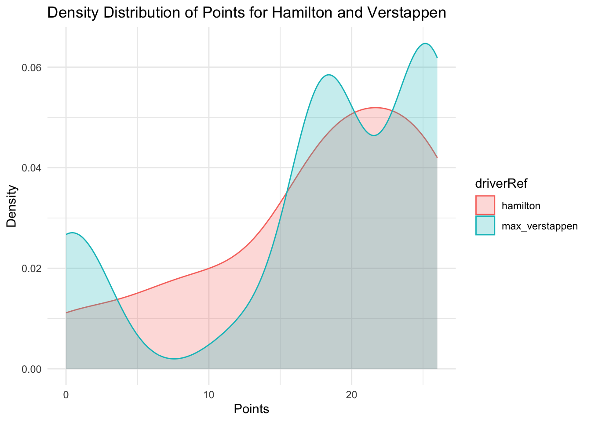

The density plot below displays the distribution of goals per game played for each position. Use it to answer the following two questions.
Use the following graph to answer the questions.
1). We are trying to graph the final position based on starting position. We are interested in the overall relationship but also for the two drivers “max_verstappen” and “hamilton”. Complete the code for selected_drivers to just filter out the two drivers of interest.
library(ggplot2)library(dplyr)
Attaching package: 'dplyr'
The following objects are masked from 'package:stats':
filter, lag
The following objects are masked from 'package:base':
intersect, setdiff, setequal, union
library(readr)f1_df <-read.csv("f1_results.csv")# Define selected drivers#ANSWER: c("max_verstappen","hamilton")selected_drivers <-c("max_verstappen","hamilton")# Create a new column to categorize driversf1_df <- f1_df |>mutate(driver_highlight =ifelse(driverRef %in% selected_drivers, driverRef, "Other"))# Plot grid vs position, highlighting Verstappen and Hamiltonggplot(f1_df, aes(x = grid, y = position, color = driver_highlight)) +geom_point(alpha =0.7) +# Scatter plot with transparency labs(title ="Grid vs Position (Highlighting Verstappen & Hamilton)", x ="Grid Position", y ="Race Position", color ="Driver") +theme_minimal() +scale_x_continuous(limits =c(1, 20)) +# Restrict grid to typical F1 positions (1 to 20) scale_y_continuous(limits =c(0, 20)) +# Restrict position to typical race positions (0 to 20) scale_color_manual(values =c("max_verstappen"="skyblue", "hamilton"="red", "Other"="gray")) # Assign colors
2). Notice how the graph doesn’t appear to contain enough data points. Why might this be the case, and what could you add in the code to fix this?(add c(“max_verstappen”,“hamilton”))
#ANSWER ADD gemo_jitter()# Define selected driversselected_drivers <-c("max_verstappen","hamilton")# Create a new column to categorize driversf1_df <- f1_df |>mutate(driver_highlight =ifelse(driverRef %in% selected_drivers, driverRef, "Other"))# Plot grid vs position, highlighting Verstappen and Hamiltonggplot(f1_df, aes(x = grid, y = position, color = driver_highlight)) +geom_point(alpha =0.7) +# Scatter plot with transparency labs(title ="Grid vs Position (Highlighting Verstappen & Hamilton)", x ="Grid Position", y ="Race Position", color ="Driver") +geom_jitter()+theme_minimal() +scale_x_continuous(limits =c(1, 20)) +# Restrict grid to typical F1 positions (1 to 20) scale_y_continuous(limits =c(0, 20)) +# Restrict position to typical race positions (0 to 20) scale_color_manual(values =c("max_verstappen"="skyblue", "hamilton"="red", "Other"="gray")) # Assign colors
3). Comment on the overall relationship between grid position and race position for the entire grid. Also, note any notable races that might not follow the overall trend. ANSWER There appears to be a positive relationship between grid position and final race position. One notable race was when max verstappen started 20th and finished 2nd.
4). What trends or observations do you see for each driver individually ANSWER Lewis Hamilton has one race where he started top 5 but finished 15th. Max Verstappen has a similiar race where he finsihed 9th. Overall, Max Verstappen generally has a better starting grid position than Lewis Hamilton.
5). Given this graph and the start of the code, write the code that outputs this plot. Comment on the shape of the distribution of points throughout the seaon. .
# Filter data for Lewis Hamilton and Max Verstappenselected_drivers <-c("hamilton", "max_verstappen")f1_df_filtered <- f1_df |>filter(driverRef %in% selected_drivers)#ANSWER#Plot the density distribution of points for Hamilton and Verstappenggplot(data = f1_df_filtered) +geom_density(aes(x = points, color = driverRef, fill = driverRef), alpha =0.25) +theme_minimal() +labs(title ="Density Distribution of Points for Hamilton and Verstappen",x ="Points",y ="Density")

ANSWER Both of these graphs are skewed to the left. Hamilton finished most of his races scoring 15-25 points where Max Verstappen had more races where he scored zero points and then there are peaks at around 18 and 25 whereas Hamilton finished the most of his races at 20 points.